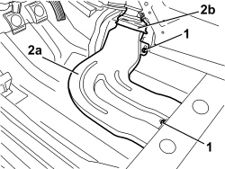

5010B47 SIDE AIR DUCT TO REAR SEATS (ONE), LH OR RH - R.R.
- Path
- Procedures > 50 AUXILIARY UNITS > 5010 CLIMATE CONTROL - MISCELLANEOUS > 5010B CLIMATE CONTROL AIR PIPES AND DUCTS > 5010B47 SIDE AIR DUCT TO REAR SEATS (ONE), LH OR RH - R.R.
- Kind
- repair procedure (removal / refitting; the operation number is the code)
- Applies to
- all engines; all production periods
- Interactive page
- https://sloeber94.github.io/elrnDB/#/939010889
Applies to: all engines; all production periods
 Removing
Removing
 Refitting
RefittingOp. 7045A10 FRONT SEAT (ONE), LEFT OR RIGHT - R.R.
Op. 7040A65 CONSOLE SIDE CLOSING (ONE) - R.R.
Op. 7040L40 FRONT DOOR RUNNING BOARD (ONE), LEFT OR RIGHT - R.R.
If necessary
Op. 7040L50 DRIVER SIDE FOOT REST - R R
Op. 7040L06 PASSENGER COMPARTMENT FLOOR RIGHT FRONT CARPET - R. R.
Or, alternatively.
Op. 7040L07 PASSENGER COMPARTMENT FLOOR LEFT FRONT CARPET - R.R.
1. Undo the duct retaining nuts.
2. Remove the duct (2a) releasing it from the connector (2b).

Applies to: all engines; all production periods
Refitting
Removing- Check that the duct is not damaged.
- Position the duct and attach it to the connector.
- Tighten the retaining nuts.
Op. 7040L07 PASSENGER COMPARTMENT FLOOR LEFT FRONT CARPET - R.R.
Op. 7040L06 PASSENGER COMPARTMENT FLOOR RIGHT FRONT CARPET - R. R.
Op. 7040L50 DRIVER SIDE FOOT REST - R R
Op. 7040L40 FRONT DOOR RUNNING BOARD (ONE), LEFT OR RIGHT - R.R.
Topics linked from this page (6)
- 7040A65 CONSOLE SIDE CLOSING (ONE) - R.R.
- 7040L06 PASSENGER COMPARTMENT FLOOR RIGHT FRONT CARPET - R. R.
- 7040L07 PASSENGER COMPARTMENT FLOOR LEFT FRONT CARPET - R.R.
- 7040L40 FRONT DOOR RUNNING BOARD (ONE), LEFT OR RIGHT - R.R.
- 7040L50 DRIVER SIDE FOOT REST - R R
- 7045A10 FRONT SEAT (ONE), LEFT OR RIGHT - R.R.